About Myself
I am a final-year doctoral student at the Computational Robotics Lab(CRL) at ETH Zürich, supervised by Prof. Stelian Coros and Dr. Bernhard Thomaszewski. I obtained my master's degree in Computer Graphics (CGGT) from University of Pennsylvania under the supervision of Prof. Chenfanfu Jiang. My interests lie in physics-based simulation, inverse design and neural representations.
All projects during my Ph.D. are open-sourced on my GitHub page. I also maintain a code base, which I named WuKong, a figure in Chinese folklore. You'll find my implementation for a few things that come in handy for simulation in graphics.
I am expecting to graduate in April 2025 and am seeking full-time research scientist positions in computer graphics/vision/machine learning.Publications
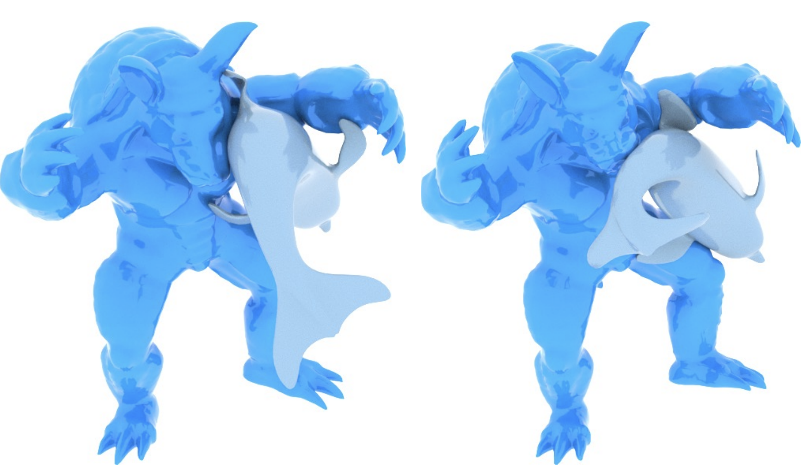
Robust and Artefact-Free Deformable Contact with Smooth Surface RepresentationsYinwei Du, Yue Li, Stelian Coros, Bernhard Thomaszewski, Computer Graphics Forum (Proc. ACM Symposium on Computer Animation 2024) [PDF] [video] [code]
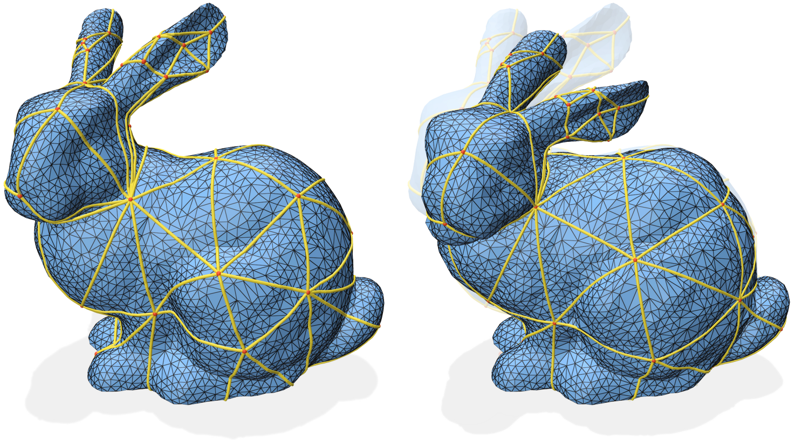
Differentiable Geodesic Distance for Intrinsic Minimization on Triangle MeshesYue Li, Logan Numerow, Bernhard Thomaszewski, Stelian Coros, ACM Transactions on Graphics (Proc. ACM SIGGRAPH 2024)
[PDF] [video] [code]
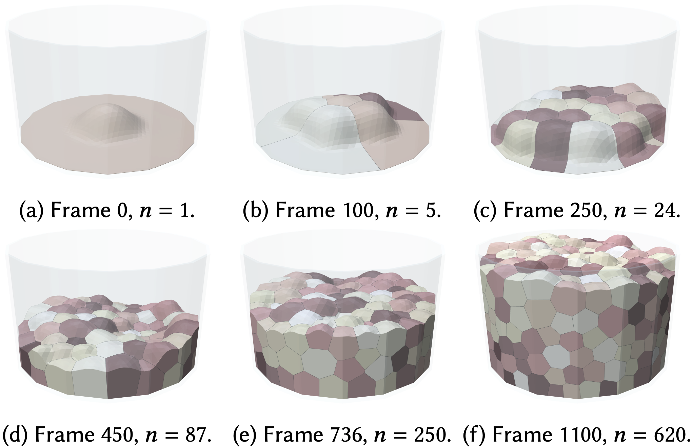
Differentiable Voronoi Diagrams for Simulation of Cell-Based Mechanical SystemsLogan Numerow, Yue Li, Stelian Coros, Bernhard Thomaszewski, ACM Transactions on Graphics (Proc. ACM SIGGRAPH 2024)
[PDF] [video] [code]
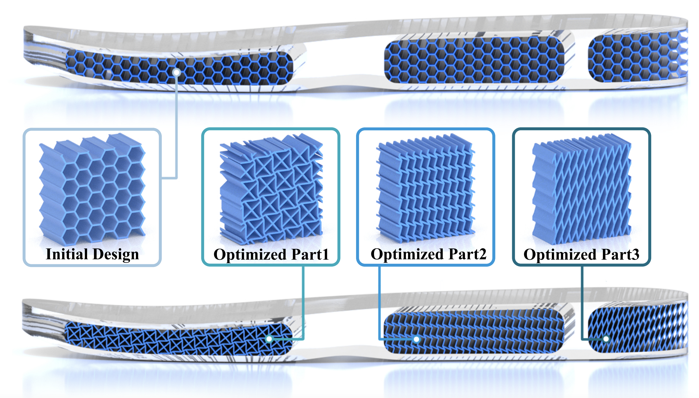
Neural Metamaterial Networks for Nonlinear Material DesignYue Li, Stelian Coros, Bernhard Thomaszewski,
ACM Transactions on Graphics (Proc. ACM SIGGRAPH Asia 2023)
[PDF] [video] [code]

Yue Li, Juan Montes, Bernhard Thomaszewski, Stelian Coros, IEEE Robotics and Automation Letters (Proc. International Conference on Robotics and Automation 2022)
[PDF] [video] [code]
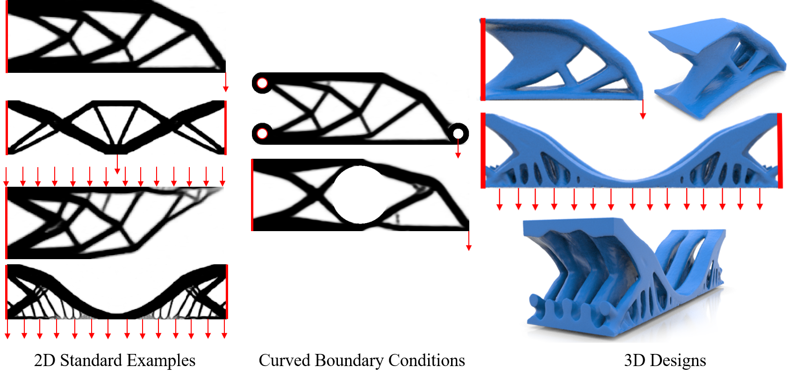
NTopo: Mesh-free Topology Optimization using Implicit Neural RepresentationsJonas Zehnder, Yue Li, Stelian Coros, Bernhard Thomaszewski, Conference on Neural Information Processing Systems (NeurIPS), 2021. [PDF] [video] [code]
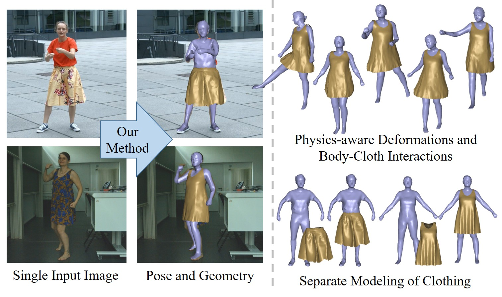
Deep Physics-aware Inference of Cloth Deformation for Monocular Human Performance CaptureYue Li, Marc Habermann, Bernhard Thomaszewski, Stelian Coros, Thabo Beeler, Christian Theobalt, International Conference on 3D Vision (3DV), 2021 [PDF] [Project] [video]
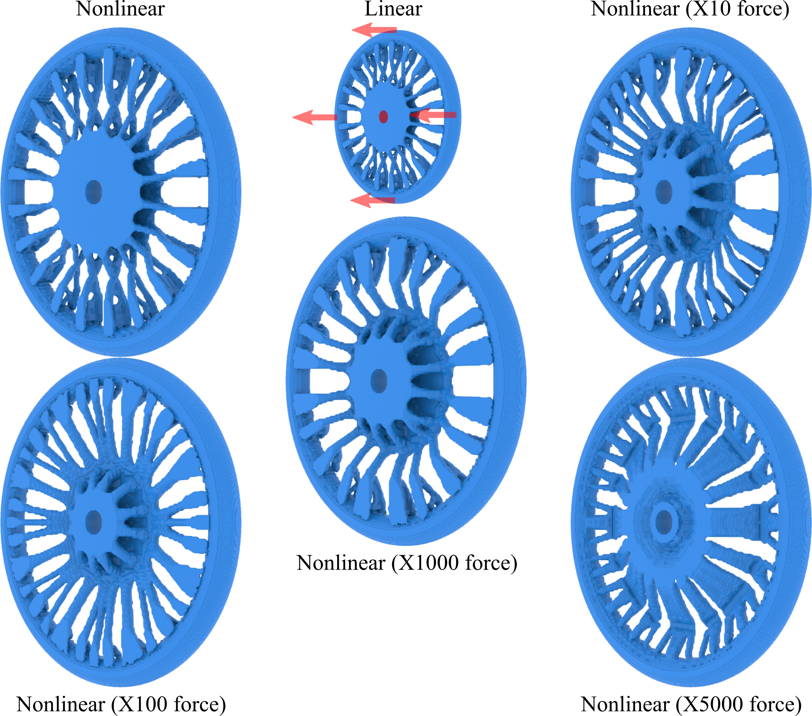
Lagrangian-Eulerian Multi-Density Topology Optimization with the Material Point MethodYue Li*, Xuan Li*, Minchen Li*, Yinxin Zhu, Bo Zhu, Chenfanfu Jiang, International Journal for Numerical Methods in Engineering (IJNME), 2021. (* Equal Contribution)
[PDF] [code]
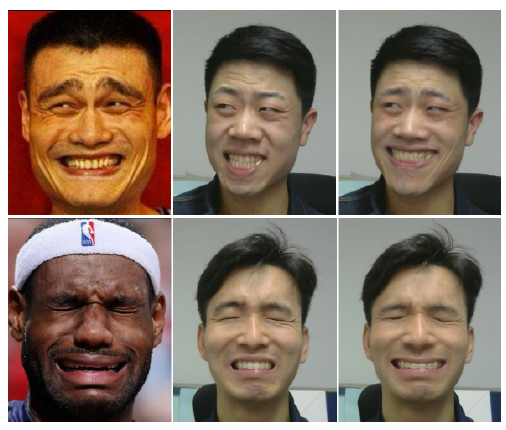
Expressive facial style transfer for personalized memes mimic , Yanlong Tang, Xiaoguang Han, Yue Li, Liqian Ma, Ruofeng Tong,The Visual Computer: International Journal of Computer Graphics, 2019.
[PDF]
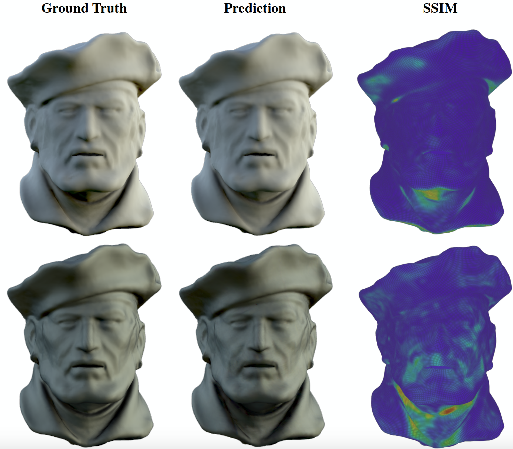
Deep Precomputed Radiance Transfer for Deformable ObjectsYue Li, Pablo Wiedemann , Kenny Mitchell ,
Proceedings of the ACM on Computer Graphics and Interactive Techniques, 2019.
[PDF]
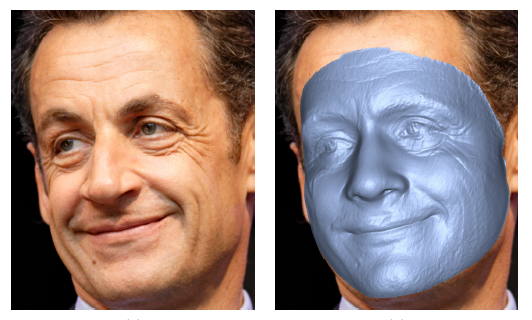
Feature-preserving detailed 3D face reconstruction from a single imageYue Li, Liqian Ma, Haoqiang Fan, Kenny Mitchell , Proceedings of the 15th ACM SIGGRAPH European Conference on Visual Media Production, 2018. [PDF] (Best Paper Award)
Short Papers, Theses, etc.
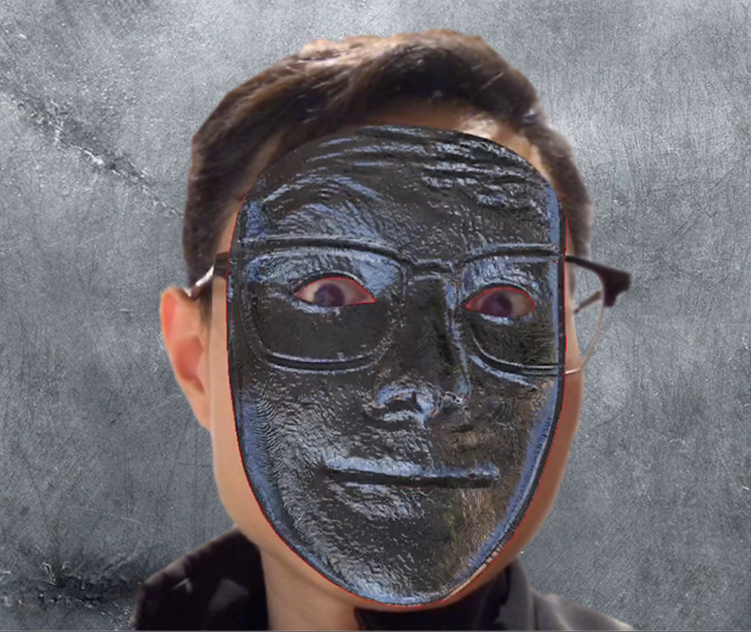
FaceMagic: Real-time Facial Detail Effects on MobileLlogari Casas , Yue Li, Kenny Mitchell . SIGGRAPH Asia 2020 Technical Communications.
Research Experiences
Research Intern
 Megvii Research (Face++), Beijing, China
Megvii Research (Face++), Beijing, ChinaAcademics Service
ACM SIGGRAPH (2023-2024), ACM SIGGRAPH Asia (2023-2024), IEEE Transactions on Visualization and Computer Graphics (2024), Eurographics (2024), Symposium on Computational Fabrication (2021)